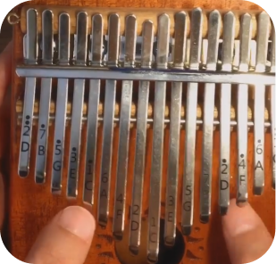
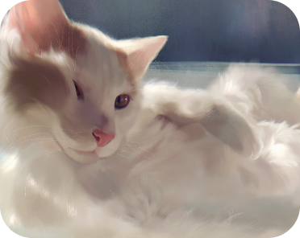

About Me
Hello again! I'm a designer, artist, and writer
motivated by problem-solving and my desire
to make things that are fun to interact with!
I grew up in awe of interactive museum exhibits and
entertainment technology, and it's still something
I'm inspired by. I'm particularly interested in
exploring story-driven interaction in its many forms.
I am currently a junior at Carnegie Mellon University
studying Cognitive Science with an additional major in
Human-Computer interaction and a concentration in usability.
Outside of school, I am learning new pieces on the

kalimba,
studying Korean, on the lookout for people to
play rhythm games with, reading lit mags, and missing

my cat.
Looking for Summer 2022 internships
related to UI/UX and graphic design!
Contact me at
jeremia@cmu.edu.
View Resume